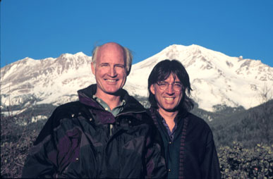

 |
Gary Cooper | |||
|
Gary Cooper, guitarist, flautist, singer-songwriter has been performing for over 35 years. He writes and performs transformational songs that leave the listener uplifted. Gary has lived in the Mount Shasta area for over fifteen years. He and Anton Mizerak have numerous recordings together and tour together regularly. Gary also appeared with Anton at the annual Mount Shasta Wesak celebrations which are in late April or early May. Gary passed away from this earth plane in fall 2017. We will miss him, his music and his always optimistic spirit. | ||||
| Gary and Anton at Mount Shasta | ||||
|
For a Gary Cooper MP3 go to the Live Concert MP3 downlad page. | ||||
|
| ||||